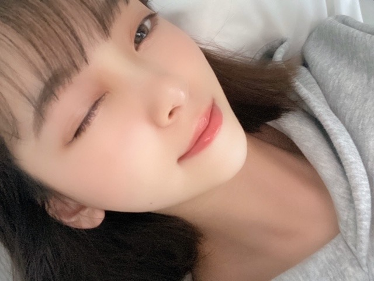
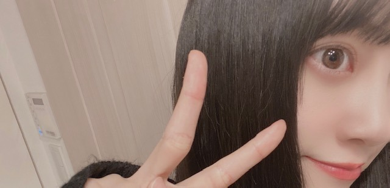
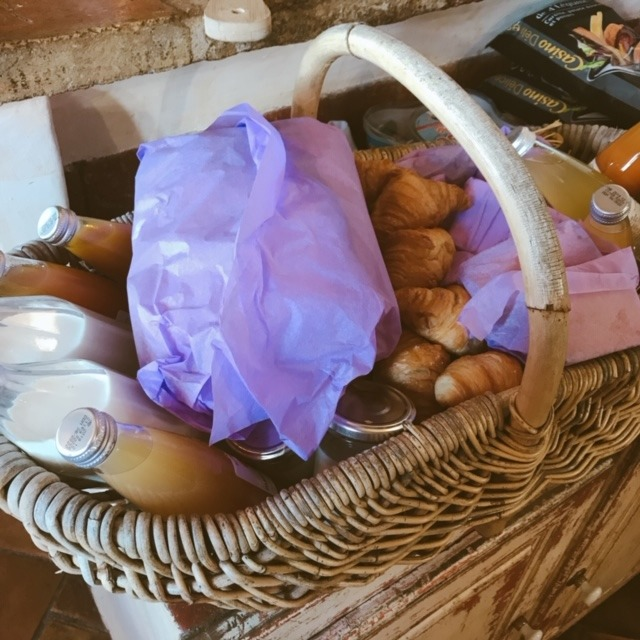

2020/0501Friご
5月ですね
じわりと梅雨に近づいてきてますが
雨の日に聞きたくなる曲や
映画ドラマアニメはなんですか？
教えてください☺︎
私は映像だと
" 恋は雨上がりのように "
" 海街diary "
" 耳をすませば "
" 言の葉の庭 "
は欠かせません!

そしてそして
カップスターさんの企画で
今日から毎月1話ずつ
" 乃木坂毎月劇場 " が公開されていきます!
東京03さんとオークラさん脚本で
やらせていただきました☺︎
ドラマ遊戯みたいにいかない 以来でしたが
やはり楽しい現場でした!
是非見てください☺︎

質問返し
やってみたかったバイトとか
仕事ってありますか？
→バイトはコンビニ、パン屋さん、
和菓子屋さん、ファミレス
仕事は保育士さん、化粧品販売員、
ウエディングプランナー、
芸能事務所の新人育成かな

ブログとかインスタとかにお料理
よく載せてるけど、
いつからお料理始めましたか？
あと、資格とか持ってますか？？
前から気になってたので！
わたしもおうちでみおなちゃん
の真似して作ってみます！
→高校で料理クラブに入ったり
授業で食物検定をとってから
ちゃんとしだしたかなぁ☺︎
中学の時は簡単な和食くらいしか
作れなかったけどお母さんに
教えてもらったりレシピ見ながら
レパートリーを地道に増やしています！笑
最近よく聴く曲教えて！
→ここ1週間で聴いた曲ランキング
そのまま載せますね
1 リッツパーティー / back numberさん
2 Beautiful / Wanna Oneさん
3 晴れた日に... / 久石譲さん
4 星のない世界 / aikoさん
5 最大公約数 / RADWIMPSさん
6 メッセージ / チャットモンチーさん
7 ブルー / フジファブリックさん
8 Blueming / IUさん
9 僕の名前を / back numberさん
10 西藤公園 / back numberさん
次あたりに明るい髪色にしたりしますかね？
→なんだかんだ暗髪気に入っていて...
でも気分で明るくする時もあるかも！
最近あった面白いエピソードは何ですか?
→家族でトランプのダウトをしたときに
お母さんがルール分かってなくて
全部の手持ちのカードを出して
ダウト！って言ったとき。笑
みんなで笑い転げました。笑
外国に住むならどこがいい？
→のんびりとしたヨーロッパがいいなぁ
ニースやコルシカ島に行って、
いつか住みたいなって思ったよ！
髪を染めようと思ってるんだけど
何色がいいと思いますか？男子です！
未央奈の意見を参考にしたいです(^^)
→私好みにしてくれるの？嬉しい♪
なんだかんだ黒髪が1番すきです！
四期生で1番仲良いのは誰？
三期生で1番仲良いのは誰？
→1番とかは無いかなぁ
れんか、しおり、与田ちゃんとは
仕事も一緒なことが多くて
合間に話すくらいかな！
もっとみんなと話したい〜☺︎はなそっと☺︎笑
髪の毛ボサボサのときとかないんですか
→寝癖つきやすくてよくメンバーに
いじられますよ
アーティスティックな寝癖らしい。笑
以上
ハワイで食べたステーキが美味しくて
いまとてもステーキが食べたいです
ではでは
2020/05/01 14:06


コメント(440)
可愛い
いつもブログとか755とかありがとうね嬉しい！
好きです〜
flumpoolさんの証いい曲ですよ
乃木坂毎月劇場面白いです
これからも、頑張ってください‼️
あの最後の未央奈が頭にのっけてるところ面白かった
乃木坂毎月劇場見たよ！！
料理いいよねー。
自分も作らなくちゃって思ってるけどなかなか腰が重くてね…。
梅雨が近づいてきたねー
僕も、恋は雨上がりのようにすきだよーー。いい話だよね。雨が印象的！！
堀ちゃんとはやく、握手したいなーーー
またねね
ようちゃんマン
ずっとブログ読み返してます！！！
セカオワさんのRAINもいいですよ
恋は雨上がりのように
わたしも観てみたくて、良かったら感想とか教えてほしいです！ ✊ ♡♡
良かったらお願いします！
見る度に未央奈ちゃんがでてくる笑笑
質問でーす！
あの教室が好きなんだけど、おすすめのシーンってある！？
写真集発売まで1ヶ月切ったね！
ほんとに楽しみです!!
また握手会の時に感想伝えに行きます！
雨の日に聴きたくなる曲かー
ぱっと思いつく所ではミスチルの雨のち晴れ、innocent world、いきものがかりの赤いかさとかかなー
多分もっと考えれば出てくると思うけど、、笑
堀ちゃんが聴いた曲ランキングのやつ聞いたことない曲もあるから聞いてみるね！
ブログとかインスタとか頻繁に更新してくれるのとても嬉しい！
ブログ更新ありがとう
大好き！
あつ森の通信実況してほしいーー！！
これからすぐ頑張ってください！！！
ーみずきー
ブログ更新ありがとう。
メンバーの元気な姿見るとこっちも元気出る！
いっぱい更新してくださいね
乃木坂毎月劇場、絶対にみますよ〜！
楽しみ〜！！
じゃ、体に気をつけてね。
頑張って！！！！！
優太
台湾の映画です
ブログ更新ありがと
大好き！
ハワイのステーキって肉肉しくて美味しいですよね！
毎年家族とハワイ行ってウルフギャングに行ってステーキ食べます！
カップスターの動画見ましたー！！！
とても面白かったです！
堀ちゃんは何味が好きですか？
雨の日の曲といえばAAAの恋音と雨空が印象にあります
映画だと天気の子かな？
今から晴れるよ！っていうセリフが印象的で、なんか雨の日に言いたくなります！ほんとに晴れたりはしないけど笑
体調には気をつけてください！
雨の日に聴きたくなる曲は雨のち晴レルヤです！
パン美味しそう！未央奈ちゃんパン屋さん似合う！！
早く自由に外に出れる日がきて美味しいものたくさん食べたいね！それではまた！！
雨の日に聴きたい曲は、雨のうち晴レルヤですね。
また、ブログ更新待っています。
乃木坂毎月劇場見たよ！めっちゃ面白かった！笑
大人っぽくて，可愛い未央奈は素敵すぎです．
ヨーロッパいいですよね！ドイツに興味があるのですが，ドイツの印象とか教えてくれますかー？
僕も髪が伸びると寝癖が独創的になるのですが，アーティスティックという表現がめっちゃいいので使っていきます(笑)
雨の日に聞く音楽はSOYOU&OVANのRain Dropってゆう曲聴くよ！韓国の音楽だけど初めのイントロがいい感じだよ！
よかったら聴いてみて!!
東京03さん大好きでよくyoutubeでコント動画見てるよ。
前髪上げてるのすごく好き。超可愛い。
雨の日に見たい映画は「ショーシャンクの空に」かな!
観たことある？雨のシーンがすごく印象的だよね。
もしないなら是非見て！
俺が好きな曲は
YOUR SONG/エルトン・ジョン
I Don't Cara/エド·シーラン、ジャスティン・ビーバー
〜〜〜〜〜〜〜〜〜〜質問〜〜〜〜〜〜〜〜〜〜
① 好きな番組は？
② コロナウイルスが終息したらなにがしたい？
③ 新4期生の中で誰と仲がいい？
乃木坂毎月劇場観たよ！面白かった！
マイペースさん可愛かった♡
私ももうすぐ一人暮らしを始めるので料理練習しなきゃなあと思ってます！未央奈ちゃんのおすすめレシピとか知りたいな！
未央奈ちゃん含め乃木坂のみんなの寝癖とか想像つかない
未央奈ちゃんの寝癖ショット見たいです笑
コメントする